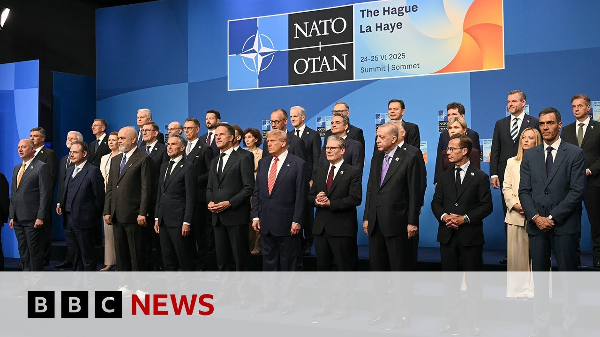

【2025-06-26 BBC新闻：北约成员国确认国防与安全支出将在2035年前达到GDP的5%】
Summary: NATO leaders have agreed to increase defense spending to 5% of GDP by 2035, marking a historic milestone. President Trump hailed it as a major victory, while allies reaffirmed their commitment to collective defense under Article 5. Discussions also covered Ukraine, with Trump pledging Patriot batteries but avoiding direct criticism of Russia.
摘要： 北约领导人同意到2035年将国防开支提高至GDP的5%，标志着历史性里程碑。特朗普总统称此为重大胜利，盟国重申对《华盛顿条约》第五条集体防御的承诺。讨论还涉及乌克兰问题，特朗普承诺提供"爱国者"导弹系统，但避免直接批评俄罗斯。

⏱️ Estimated Reading Time: 27 min
📚 六级生词 📚 雅思生词 📚 托福生词 📚 专八生词 📚 SAT生词 📚 考研生词 📚 GRE生词 📚 高考生词
Hello everyone and welcome back to the H.
大家好，欢迎回到H现场。
All the noise that you heard behind me during those headlines was the convoy of cars leaving that follow President Trump.
刚才头条新闻期间大家听到的背景噪音是跟随特朗普总统的车队离开的声音。
He has just finished talking to the media here in the H.
他刚刚在H现场结束了与媒体的对话。
He was in a triumphant mood.
他处于胜利的喜悦中。
He gave us a little wave as he went past uh because he has got what he wanted out of the summit that leaders from members of the NATO military alliance have made this huge landmark agreement which will see countries commit to 5% of their national income on defense spending.
他经过时向我们轻轻挥手，因为他在北约峰会上如愿以偿——成员国领导人达成了这项重大里程碑协议，各国承诺将国防开支提高到国民收入的5%。
Now Donald Trump he said this was a landmark agreement.
特朗普称这是项里程碑协议。
He said it was a massive win, a big win for the US and also for the West.
他表示这是美国和西方的巨大胜利。
We saw world leaders today reaffirming what they called their ironclad commitment to collective defense as enshrined in article five of the Washington treaty that an attack on one is an attack on all.
我们看到各国领导人今天重申了他们所谓的对集体防御的坚定承诺——正如《华盛顿条约》第五条规定"对一国的攻击即视为对所有成员的攻击"。
We've been watching uh President Trump speak in the last hour speaking to the media and he said now was the time for other NATO members to take up the burden of European defense.
过去一小时我们观看了特朗普总统对媒体的讲话，他表示现在是其他北约成员国承担欧洲防务责任的时候了。
The United States accounts for twothirds of all NATO defense spending.
美国承担了北约三分之二的防务开支。
And since I began pushing for additional commitments in 2017, believe it or not, our allies have increased spending by $700 billion.
自2017年我推动增加防务投入以来，信不信由你，我们的盟友已增加了7000亿美元支出。
Uh I said to people, you you don't have any money.
我曾告诉某些国家：你们根本没钱。
And a lot of them weren't paying.
当时很多国家确实没有支付。
And so I started the process and I picked it up as soon as I got back, which is six months ago.
于是我启动了这项进程，半年前一回来就立即着手推进。
And following my election last November, almost all have accelerated plans to reach the 2% 3% 4% and then ultimately very quickly 5% and uh all of this is going to be done very quickly, almost immediately.
去年11月我当选后，几乎所有国家都加速实现了2%、3%、4%的目标，最终将很快达到5%，整个过程会非常迅速。
You probably know this as well as I do.
你们可能和我一样清楚。
I'm sure they've been talking about it.
我相信他们一直在讨论此事。
It's really been a big focus.
这确实是重点议题。
uh in a very historic milestone this week, the NATO allies committed to dramatically increase their defense spending to that 5% of GDP.
本周这个历史性里程碑时刻，北约盟国承诺将国防开支大幅提高到GDP的5%。
Something that no one really thought possible and they said, "You did it, sir. You did it."
这曾是没人认为可能实现的目标，他们对我说："先生，是您促成了这一切。"
Well, I don't know if I did it, but I think I did.
虽然不确定是否是我的功劳，但我想确实如此。
More to come on some of the other comments that President Trump made on Iran and Israel and the nuclear program in Iran and also on Ukraine.
关于特朗普总统对伊朗、以色列、伊朗核计划及乌克兰的其他表态，我们稍后继续报道。
But let's bring you some of the closing remarks from the NATO Secretary General Mark Rut first.
现在先带来北约秘书长延斯·斯托尔滕贝格的闭幕讲话。
Now, he said this landmark 5% agreement was ambitious yet essential, he said, and it would lead to a quantum leap in collective defense to ensure we can effectively deter aggression and defend ourselves and each other should anyone make the mistake of attacking.
他表示这项5%的里程碑协议雄心勃勃但至关重要，将带来集体防御的量子飞跃，确保我们能有效威慑侵略，在任何国家遭受攻击时共同防御。
Allies recognize the severity of the threats we face and in response they have come together to agree an ambitious but essential new defense spending commitment.
盟国认识到面临威胁的严重性，因此共同达成了这项雄心勃勃但必要的新防务支出承诺。
Our decisions today show from the Mediterranean to the Arctic, from the west coast of North America to our eastern flank, all allies are united in understanding that we need to step up to stay safe and they are acting on it.
从地中海到北极，从北美西海岸到东部前线，今天的决定表明所有盟国都共识必须加强防务以确保安全，并正在付诸行动。
President Trump has been clear.
特朗普总统立场明确。
America is committed to NATO.
美国致力于北约。
He affirmed that again today in no uncertain terms.
他今天再次明确重申这点。
At the same time, he made clear that America expects European allies in Canada to contribute more.
同时他也明确表示，美国期待欧洲盟国和加拿大作出更多贡献。
And that is exactly what we see them doing.
而这正是我们看到的现状。
European allies in Canada will do more of the heavy lifting, equalizing their spending and taking greater responsibility for our shared security.
欧洲盟国和加拿大将承担更多重任，平衡支出，为共同安全负起更大责任。
Well, joining me now here in the H is Ed O'Keefee, CBS News senior White House and political correspondent.
现在CBS新闻白宫暨政治高级记者埃德·奥基夫加入我们在H现场的讨论。
Uh, also referred to just a short time ago as not a nice man by President Trump.
他刚才被特朗普总统称为"不是个好人"。
We'll get to how that felt in a moment, but of everything that we just heard from him.
我们稍后会谈及他的感受，但先分析刚才听到的内容。
There's a lot to go through.
信息量很大。
Can Can we start with what he's saying about NATO, he was in a really good mood.
能否先谈谈他对北约的表态？他心情非常好。
He sees it as a big win, but he's really changed his tune when it comes to NATO.
他认为这是重大胜利，但对北约的态度确实发生了转变。
He was he was very warm and affirming.
他表现得热情而坚定。
Well, and and and and that should be no surprise.
这其实并不意外。
in a day when they finally embrace something that he and as he reminded us many other American presidents have pushed for in the past which is an argument that other member nations should be paying more into the alliance after decades of American support.
因为盟国终于接受了他——正如他提醒的——也是多位美国前总统长期推动的主张：在美国支持数十年后，其他成员国应该增加联盟投入。
So that they've done that so explicitly and with such flattering especially by the Dutch and by the secretary general having him state spend the night at the palace here in the H and then having Secretary General Maruta text him yesterday very uh gushing about the accomplishment they were going to achieve together and then today saying the US has shouldered this burden for so long and you won't have to anymore.
荷兰和秘书长的奉承尤其明显——安排他下榻H城宫殿，秘书长昨天还发热情洋溢的短信盛赞他们将共同取得的成就，今天更表示"美国承担这个负担太久，今后不必再独自承担"。
All of that designed to get him on board and keep him engaged.
这些都是为了争取他的支持并保持他的参与。
Yeah.
是的。
He said he was moved by hearing from other leaders about the defense of their country and then he reaffirmed the US commitment to article 5.
他说听到其他国家领导人讲述国防故事很感动，随后重申美国对第五条承诺。
I want to hear I want to learn more about how that went because that of course was in close session and we don't see that but clearly either Rut or someone else was telling the leaders you've got to tell him these stories and get him engaged and get him interested and invested in in maintaining the relationship.
我想了解更多细节，因为这属于闭门会议。显然斯托尔滕贝格或其他人指导过领导人："必须讲这些故事来吸引他，让他对维护关系产生兴趣和投入"。
And it was interesting because before the president spoke the secretary general admonished reporters who keep asking keep worrying about whether the United States is committed.
有趣的是，在总统讲话前，秘书长告诫那些不断质疑美国承诺的记者。
He said to the rest of Europe stop worrying about this.
他告诉其他欧洲国家停止担忧。
They're here.
美国就在这里。
They've named a new Supreme Allied Commander.
他们任命了新盟军最高司令。
He came to the meeting.
他参加了会议。
He's talking in great detail about the situation in Ukraine and Russia.
他详细讨论了乌克兰和俄罗斯局势。
He met with Zolinsky.
他会见了泽连斯基。
The Americans aren't going anywhere.
美国人不会离开。
Asked the question of other European countries, whether they're going to keep their commitments to being in the alliance.
现在问题转向其他欧洲国家是否会坚守联盟承诺。
So, it's it's been an interesting day where unlike the other summits he's attended where suddenly he's the star of the show, he's not the one pushing his way to the front of the crowd.
今天很有趣——不同于他过去参加的峰会突然成为焦点，这次不是他主动挤到人群前面。
Remember that? Back in 2017.
记得2017年吗？
He's not calling them delinquent like he did back in 2018 admonishing them for not paying more and leaders off in the corner sort of whispering to themselves and ignoring him.
他没有像2018年那样称盟国"赖账"，斥责他们出资不足，也没有领导人躲在角落窃窃私语无视他。
He's not the butt of jokes as they were at Buckingham Palace, remember when it was hosted at NATO.
他也没像在白金汉宫北约峰会时那样成为笑柄。
He's now the guy at the center of the room.
如今他是房间中央的主角。
They're listening to him and route to admitted.
大家都在听他讲话，斯托尔滕贝格也承认。
It's because look, he won election.
原因很简单：他赢得了选举。
He had made clear to us this was a priority.
他明确表示这是优先事项。
We have to, you know, meet him on this issue.
我们必须在这个问题上与他接触。
And very briefly to be called out like that, you got the first question.
被这样点名很突然，你得到了第一个提问机会。
Not a nice man doesn't bother you.
“不是个好人”这种评价对你无所谓。
What are No, because look, it's not our job to flatter him, right?
不，因为听着，我们的工作不是奉承他，对吧？
Apparently, that's the secretary general's job and others.
显然，那是秘书长和其他人的工作。
Our job is to ask questions.
我们的工作是提问。
Being called not a nice guy by him, uh, I think President Biden did sim similar things not only to me, but to others as well.
被他称为“不是好人”，呃，我想拜登总统也对我和其他人做过类似的事。
Look, that an American president engages with the free press at a meeting like this, I think is important to the world.
看，美国总统在这样的会议上与自由媒体互动，我认为对世界很重要。
So, we appreciate his time.
所以，我们感谢他的时间。
you could back off on the per personal, you know, uh comments about reporters and their organizations.
你可以减少对记者及其机构的个人化评论。
Uh but we always appreciate uh the chance to engage an American leader and we appreciate having you here and thank you so much.
但我们始终珍惜与美国领导人交流的机会，感谢你的到来。
Well, uh the British Prime Minister Sak Dama has been outlining as well how the UK will increase their defense budget to honor this NATO pledge.
英国首相萨卡·达马也概述了英国将如何增加国防预算以履行北约承诺。
Have a listen.
请听。
NATO allies have agreed a new defense investment pledge raising defense and security spending to 5% of GDP by 2035, making NATO stronger, fairer, and more lethal than ever.
北约盟国同意新的国防投资承诺，到2035年将国防与安全支出提高到GDP的5%，使北约比以往更强大、更公平、更具威慑力。
This includes military spending as well as vital investments in our security and resilience like protecting our cyber security and our energy networks.
这包括军事开支以及对安全和韧性的关键投资，如保护网络安全和能源网络。
Allies also agreed that because the threats are constantly evolving, we will review this pledge in 2029.
盟国还同意，由于威胁不断演变，将在2029年审查这一承诺。
The new national security strategy sets out our plans and priorities across these areas.
新的国家安全战略明确了我们在这些领域的计划和优先事项。
So under the NATO new definitions, we estimate that we will reach at least 4.1% of GDP in 2027.
根据北约的新定义，我们预计到2027年将达到至少GDP的4.1%。
keeping the British people safe and strengthening our leadership in NATO even further.
保障英国人民安全，并进一步加强我们在北约的领导力。
Sec. And if I just step aside, we are waiting for President Zilinski to leave.
另外，如果我让开一点，我们正在等待泽连斯基总统离开。
So that's the line of cars you can see behind me.
所以你在我身后能看到一排车队。
Uh let's bring in Brett Bruan, former US diplomat and uh director of global engagement at the White House.
让我们请来布雷特·布鲁安，前美国外交官和白宫全球接触主任。
Actually, we're just seeing President Zilinski lead right now.
实际上，我们刚刚看到泽连斯基总统离开。
And I think if I stand away, we can focus on him.
我想如果我站开一点，我们可以聚焦他。
Great. Let's take a moment then to talk about Ukraine.
好的，我们花点时间谈谈乌克兰。
uh because he had a meeting with uh President Trump, but we haven't really learned that things have progressed further with Zilinsky saying they talked about a ceasefire, but President Trump denying that and saying he needs to get on the phone to President Putin.
因为他与特朗普总统会面，但泽连斯基称讨论了停火，而特朗普否认并说他需要与普京总统通话。
And yet, Lucy, I think President Zullinsky is leaving a happy man today.
但露西，我认为泽连斯基总统今天是高兴地离开的。
He got uh both a shout out from President Trump during his press conference.
他在特朗普的记者会上被点名提到。
there was that very emotional moment where a Ukrainian journalist from the BBC uh did um relay to President Trump and President Trump interacted with her about her husband still being in Ukraine and the plight of the Ukrainian people.
还有一个非常感人的时刻，BBC的乌克兰记者向特朗普转达了她丈夫仍在乌克兰的情况，特朗普与她互动并谈到乌克兰人民的困境。
So, the fact that that journalist's question prompted uh President Trump to commit to sending US patriot batteries into Ukraine to help with some of those Russian missiles that have been bombarding Ukrainian cities and towns is a significant takeaway.
因此，这位记者的提问促使特朗普承诺向乌克兰提供“爱国者”导弹系统，以应对轰炸乌城镇的俄罗斯导弹，这是一个重要成果。
And I think as President Zalinsky leaves, that is something that's critically critically important for him to take back to show that despite some of the depp prioritization of Ukraine during this summit, he has something that is going to help protect the Ukrainian people over the coming months.
我认为泽连斯基总统离开时，这一点对他至关重要，表明尽管峰会上乌克兰被部分边缘化，但他带回了未来几个月能保护乌克兰人民的成果。
Uh and he also said that he thought of her husband at the time as well.
他还说当时也想到了她的丈夫。
It was really quite a personal moment when we saw that from President Trump as well.
特朗普的表现也是一个非常个人化的时刻。
And yet there is no criticism overtly of Russia in this final de declaration.
然而最终声明中并未明确批评俄罗斯。
that will disappoint many.
这会令许多人失望。
No Russia plan and there was meant to be a new Russia plan before the summit.
没有对俄计划，而峰会前本应有一项新计划。
Why is that?
为什么？
Well, and it is disappointing, I have to say, especially since Russia did invade a free European country and yet there was also a line in President Trump's press conference where he said, "President Putin has got to um get to peace."
这确实令人失望，尤其是俄罗斯入侵了一个自由的欧洲国家，但特朗普在记者会上也说“普京总统必须走向和平”。
And I think the pressure as we saw a little bit just in the last couple days applied to Prime Minister Netanyahu is similarly now going to come down on President Putin.
我认为，就像过去几天对内塔尼亚胡总理施压一样，现在也会对普京总统施压。
We'll see if it lasts.
看看能否持续。
Consistency has not been a strong suit for President Trump's diplomacy, but the feeling is positive leaving the HEG here.
一致性并非特朗普外交的强项，但离开赫尔辛基时的氛围是积极的。
I think you know NATO leaders will feel as though things are going in the right direction.
我想北约领导人会感觉事情在向正确方向发展。
The fact that they mostly got to 5% with the exception of Spain is going to send a strong message to Moscow.
除西班牙外，大多数国家同意5%的目标，这将向莫斯科发出强烈信号。
Brett, thank you so much.
布雷特，非常感谢。
Good to see you as we continue to just uh watch President Zinski have a final few conversations uh before leaving.
很高兴见到你，我们继续观察泽连斯基总统离开前的最后交谈。
Uh the conversations will continue, of course.
当然，对话还会继续。
But we're still reflecting, Matthew, on that press conference from President Trump as well.
但马修，我们仍在反思特朗普的记者会。
He was in a brilliant mood, in a good mood after what he will see as a massive win for him, managing to bring all of those NATO members.
他心情极佳，将这视为自己的巨大胜利，成功让北约成员国达成一致。
Uh the Spaniards he's going to talk to, he said, but everyone else up to that 5%.
他说会与西班牙人沟通，但其他国家都同意5%。
Lucy, thanks very much.
露西，非常感谢。
As Lisa was saying, lots to analyze after listening there to Donald Trump.
如丽莎所说，听完特朗普的讲话后有很多需要分析。
Let's speak to the former Swedish Prime Minister Carl Build who joins us live here on BBC News.
让我们连线瑞典前首相卡尔·比尔特，他正在BBC新闻现场。
And Carl Bill, welcome here to the program.
卡尔·比尔特，欢迎来到节目。
You might have heard Donald Trump describing it as a monumental win getting this commitment of 5% of GDP spending for for NATO from the various countries.
你可能听到特朗普称让各国承诺北约国防开支达GDP的5%是巨大胜利。
But there is, isn't there within it quite a lot of accountancy trickery of what will actually count as defense spending.
但其中是否有很多会计技巧来定义何为国防开支？
So how do you view this?
你如何看待？
Oh, there's going to be a major exercise in sort of trickery in accounting.
哦，这将是一场会计上的重大技巧操作。
I mean the substantial commitment is the 3.5 uh for real defense spending.
真正的国防开支承诺是3.5%。
Uh and that's got to be achieved in 10 years time.
这需要在10年内实现。
That's a very substantial commitment.
这是非常实质的承诺。
No question about that.
毫无疑问。
We are around two at the moment.
目前我们约为2%。
Uh European countries have been increasing defense spending by roughly a third in the last few years and further to go obviously.
欧洲国家过去几年国防开支增加了约三分之一，显然还需更多努力。
Um I think that will be met by at least all of the countries in Northern Europe.
我认为至少所有北欧国家能达到。
I would have my question marks in Southern Europe.
我对南欧国家存疑。
Uh I'm not quite certain that the Americans will meet it by the way because they are somewhat below that particular figure.
我也不确定美国能否达标，因为他们目前略低于这一数字。
Um then they added this 1.5 in order not to not to to please Mr. Trump.
然后他们加了1.5%以满足特朗普。
Um and of course there are items that are important that have to do with the resilience but but uh that's going to be a major question of redefining existing public expenditure in order to meet the rather arbitrary targets that they had to throw in to please Trump.
当然有些与韧性相关的重要项目，但重新定义现有公共支出以满足为讨好特朗普而设定的随意目标将是个大问题。
I'll come back to that point about pleasing Donald Trump in a moment.
稍后再谈讨好特朗普这一点。
But it is so interesting because you see those various NATO leaders signing up and recognizing that they have to increase defense spending principally because of the threat that is coming from Russia.
但有趣的是，北约领导人同意增加国防开支主要因为俄罗斯的威胁。
And then you hear Donald Trump and you never hear those words from the US president.
而特朗普从未提及这一点。
No. Um Mr. Trump is saying this was because of him.
不，特朗普称这是他的功劳。
Yeah. Well, the American presidents have been pressing that is true for increasing in European defense spending for quite some time.
是的，美国总统长期敦促欧洲增加国防开支。
uh but of course the number one person responsible for this particular decision is Vladimir Putin but there's a keen recognition in a number of the European countries that we need to do more and uh even more important that was somewhat lacking I think in the discussion in the egg is the necess necessity of supporting Ukraine because it is the defense of Ukraine that is the defense of Europe.
但这一决定的头号责任人是普京，许多欧洲国家也意识到需加大投入，而峰会上更缺乏的是支持乌克兰的必要性讨论，因为保卫乌克兰就是保卫欧洲。
If the defense of Ukraine fails, Europe is in danger.
如果乌克兰防御失败，欧洲将陷入危险。
If Ukraine stands as an independent and sovereign nation, then I think the strategic options of Mr. Putin would be very limited.
若乌克兰保持独立主权，普京的战略选择将非常有限。
In fact, I think he will be go down in Russian F's history as a distinct failure.
事实上，他将在俄罗斯历史上成为明显失败者。
So that should have been the focus of the meeting.
所以这应是会议焦点。
Obviously, it wasn't.
显然并非如此。
It is really interesting you say that because isn't that the broader problem that all these leaders have with dealing with Donald Trump?
你说这点很有趣，因为这不正是这些领导人应对特朗普时的普遍问题吗？
But you think back to the G7 and the watering down of that final draft where it was taken out any sort of ceasefire uh press for Israel and Iran.
回想G7最终草案被淡化，删除了对以色列和伊朗停火的呼吁。
You think even further back to to back in early May where you had the leaders of Germany, France and the UK there in Kev on the Saturday giving a deadline to Russia.
再追溯到五月初，德法英领导人在基辅给俄罗斯设定期限。
Donald Trump intervenes and by Monday that's all evaporated.
特朗普介入后，到周一这一切就消失了。
That is a huge difficulty, isn't it?
这是巨大困难，对吧？
were dealing with such a major challenge in terms of ending this war in Ukraine.
在结束乌克兰战争这一重大挑战上。
That's a a mild way of putting it.
这算是温和的说法了。
I would say you could go back to the what I thought was the absolutely shameful vote in the United Nations where Russia or United States sa sided with Russia in defeating a European motion in order to sort of criticize the uh the Russian invasion.
我认为可追溯到联合国那次可耻投票，美国站在俄罗斯一边否决了欧洲批评俄入侵的动议。
Um, so President Trump has been extremely reluctant to be critical of Russia.
特朗普一直极不愿批评俄罗斯。
Extremely reluctant to agree to any message and uh absent from I mean I heard something now what was said prior in in the broadcast about another patriot battery going to Ukraine.
极不愿同意任何信息，而且——我刚刚听到节目中提及另一套“爱国者”系统将援乌。
That is of course significant if that happens.
若成真当然很重要。
But I mean the fact is of course that the Americans are not committing to further incre support to Ukraine and it will now be up to the Europeans to give the military and primarily the financial support.
但事实是美国未承诺进一步增援乌克兰，现在要靠欧洲提供军事和财政支持。
Yes, that absolutely essential for the defense of Europe as a whole including of course no talk of any new sanctions.
这对欧洲整体防御绝对关键，当然也没有新制裁的讨论。
final point and I'll come back to that point about pleasing Donald Trump because you posted yesterday a brutal social media post and I've got it there on the screen about Mark Rut's private messages to Donald Trump.
最后一点，回到讨好特朗普——你昨天发了条犀利推文，关于马克·吕特给特朗普的私信。
You said I'll read it out.
我读一下。
Flattery is evidently the new bond of the Atlantic Alliance.
奉承显然成了大西洋联盟的新纽带。
I guess it replaces the more outdated concepts of common values and common threat perceptions.
我想它取代了共同价值观和共同威胁认知这些过时概念。
uh tell me more about your concerns when you read something like that.
请详述你对此的担忧。
I can I can understand diplomacy being in diplomacy.
我理解外交需要技巧。
I've been in it as well.
我也从事过外交。
An element of flattery is necessary.
一定程度的奉承是必要的。
But uh I think there has been somewhat an overplay of the flattery aspects of dealing with Mr. Trump.
但应对特朗普时奉承有些过度。
I mean he has to be he's a man who's sort of he reacts to flattery obviously and uh but then of course there should be some sort of balance and then in a NATO context of course what NATO is about is the community of values defending democracy of a common security outlook which has to do with the Russian threat and now we see sort of a downplaying of the values and a downplaying of the security threat and a survival game in order to please him.
他显然对奉承有反应，但应保持平衡。北约本应是捍卫民主价值观、应对俄罗斯威胁的共同体，现在却看到价值观和安全威胁被淡化，变成讨好他的生存游戏。
And that was successful.
这确实成功了。
That's good in itself, but it can't be the core of the alliance.
这本身是好事，但不能成为联盟的核心。
Yes, Carell, we have to leave it there, but we're grateful for your thoughts, your time here on today's program.
卡尔，我们只能到此为止，感谢你的见解和时间。
Thank you so much.
非常感谢。